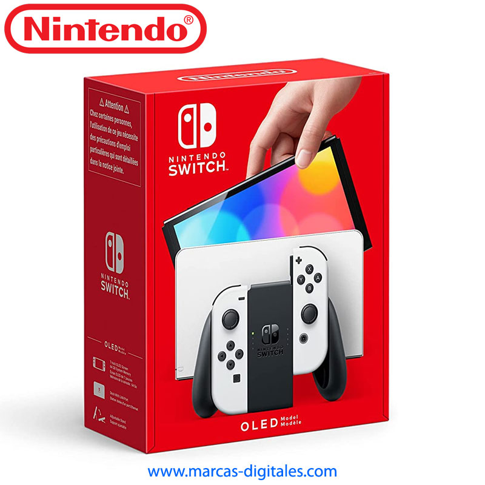

La que tengo:
Descripcion, 1 marzo 2024

Es una consola de videojuegos desarrollada por Nintendo. Es considerada una consola híbrida
Es la consola la cual mas me gusta usar, ya que al ser una consola híbrida la puedo utilizar en cualquier momento tanto en modo de sobremesa y portatil
tambien su repertorio de VideoJuegos
Repertorio:
Super Mario Odyssey